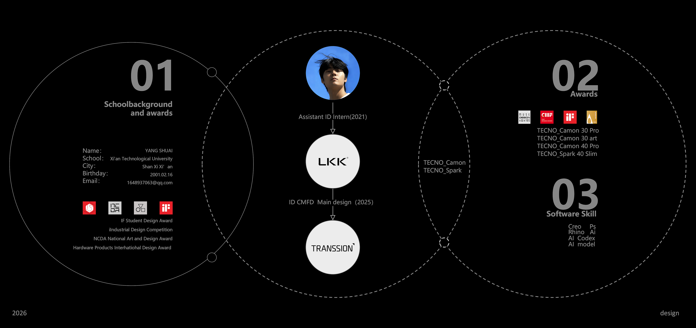
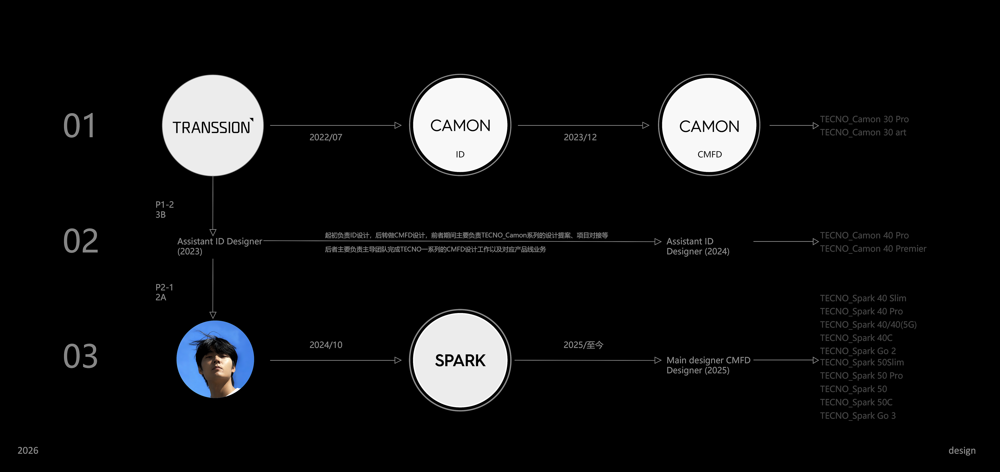

Welcome
Innovative Useful Aesthetic
Understandable Unobtrusive Honest
Timeless Thorough Sustainable
Minimal
Selected work
TECNO CAMON
TECNO SPARK
About / Resume
FROM ID DESIGN EXECUTION TO PRODUCT LINE CMF LEADERSHIP.

Awards
Award archive
This page is reserved for product awards, student design awards and project-related recognition. Award images and project links can be added here later.
More
Personal notes and selected explorations
A flexible page for design thinking, process fragments, personal records and material studies outside the main CAMON and SPARK project lines.
Other
Life, sports and interests
A lighter personal page for interests and daily identity beyond work. The structure is kept open until the final content is ready.